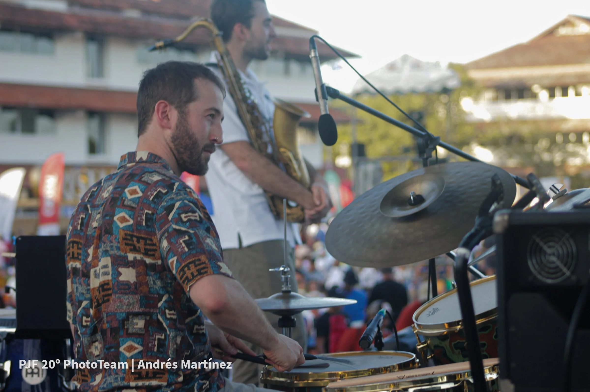

Bombaras
A live haflah for dancing: accordion, saxophone, guitar, bass and percussion. Made for bars, clubs, festivals and celebrations.
Book Bombaras
Upcoming concerts first, then a record of recent shows. New dates reach the WhatsApp group before anywhere else.
Nadav brings his bands, the ensembles he plays in, and productions he creates. Tell him about your venue, date and audience, and he will suggest the right fit.
A live haflah for dancing: accordion, saxophone, guitar, bass and percussion. Made for bars, clubs, festivals and celebrations.
Book BombarasTar player and composer Itai Armon's ensemble, rooted in the classical music of Iran and the Middle East. For listening rooms, concert halls and festivals.
Ask about the ensembleEvenings Nadav composed and directed: Jewish and Palestinian musicians in conversation, or three percussionists leading a full band. Ready to travel beyond Jerusalem.
Bring a productionA concert built around your festival's theme, your venue or a tradition you want to feature. Nadav composes, curates the musicians and directs the evening.
Start a conversationFrame drums, darbuka and riq for live shows and recordings, as Nadav plays with Shimon Buskila, Rotem Cohen and others.
Book NadavJoin to hear about Nadav's upcoming concerts and new productions first, along with his personal recommendations for boutique world-music concerts around Israel. A few messages a month, announcements only.